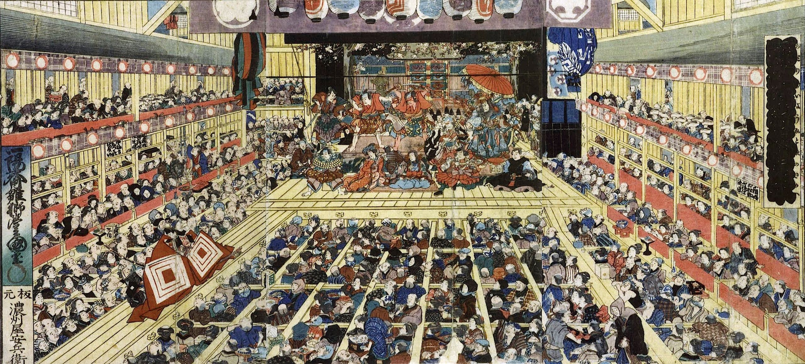
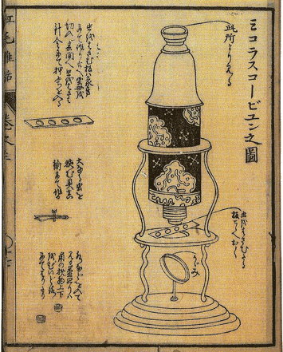

Arts

The prosperity that Ieyasu brought to Japan resulted in a nearly immediate swell of artistic expression and visual culture. The rise of the ukiyo-e, or “pictures of the floating world,” tradition reflected one of these main developments. These scenes, which took the forms of both painting and prints and that covered topics ranging from portraits of popular performers to views of fantastical landscapes. These images could be seen as presenting an aspect of popular culture, but they were also seen as a means of contemplation in line with the popular mode of Neo-Confucian philosophy.
At the same time, it was during this era that the art of porcelain entered into one of its most prolific periods. Court elites would be surrounded by elegant porcelain wares that featured novel shapes and intricate designs that showcased optimum luxury.
Entertainments
Expanding from the Noh theatrical tradition that had been in place since the 14th century, the early years of the Tokugawa shogunate also saw the rise of kabuki theater. Originally an all-female art form, kabuki theater drew big crowds and earned a reputation for its boisterous performances. By the 1630s, men began to dominate the art form and performances became even more bawdy, resulting in the shogunate’s brief ban of performances until the early 1650s.
Also developed during this sixteenth-century period was the tradition of bunraku, or puppet, theater. Originally launched as a street performance for the common classes, as the century progressed these puppet performances grew in grandeur as the century progressed.
Education
Given the rise of globalized thinking over the course of the seventeenth century, those in the courts of Edo Japan pursued study of rangaku, or “Western learning,” which comprised knowledge garnered by European scholars and scientists. These teachings from the Western world proved particularly important among the Japanese court when the shogunate closed Japan off from the world with the establishment of sakoku in 1641.
Philosophy

Ieyasu and his cohort promoted the practice of Neo-Confucianism, which blended the teachings of Taoism and Buddhism to promote a balance between the moral human spirit and the majestic natural world. From this perspective, nature itself became a lens through which one could contemplate their role in the grand scheme, thus promoting the genre of ukiyo-e landscape scenes for interior decoration.
This blend between philosophy and art was also reflected in the rise of Japanese bunjin, or quasi-literati artist/philosophers who could paint as well as write in elegant calligraphic forms.